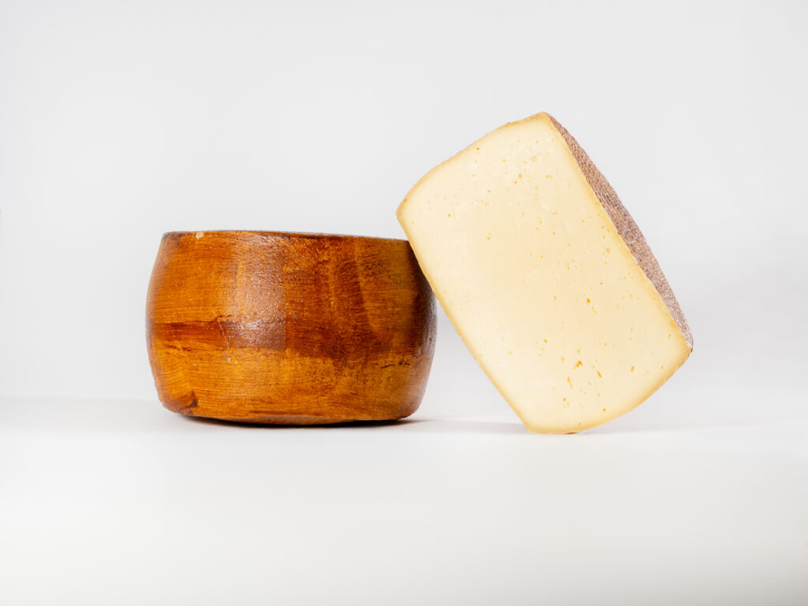
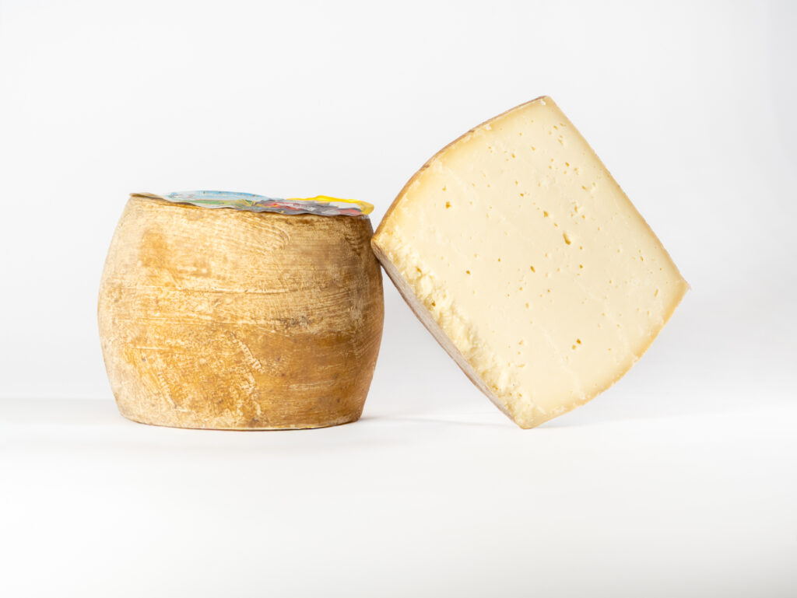
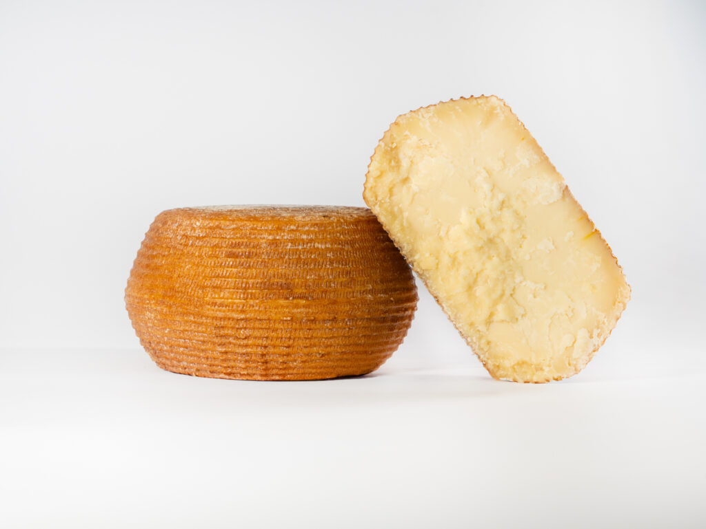
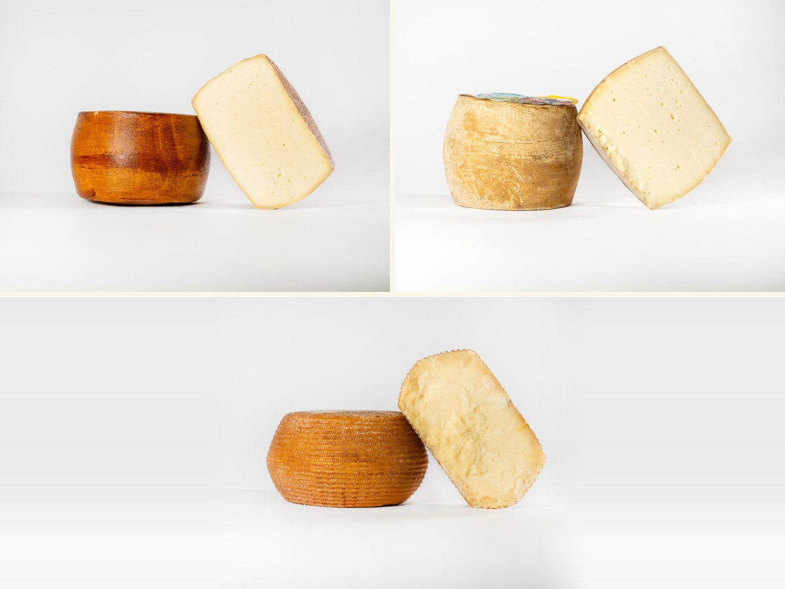

Fresh
Pecorino tenero 3 mesi
Tap for description →

Semi-aged
Pecorino semistagionato 8 mesi
Tap for description →

Aged
Pecorino stagionato 10 mesi
Tap for description →

The full taste
DOMU tasting box
Tap for description →